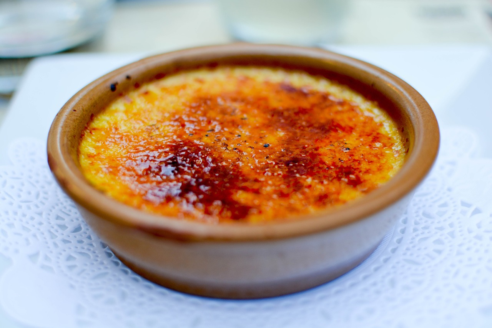

Creme Brulee

Description
This is many`s favourite classic French dessert. It is based on vanilla custard with sugar crust. With few ingrediences it may seem simple to make, yet it may take several attempts to get consistency right. At its best it should be elegant and velvety in structure, with a delicate hint of vanila. It is best complemented by a glass of cognac or Grand Marnier. The bast result can be achieved when using fresh free-range eggs.
Ingrediences
- 1 whole egg
- 4 yokes
- 100g sugar plus 15g for each serving
- 500ml double cream
- 1 vanilla pod
- 1 tbsp orange liqueur e.g. Grand Marnier
Steps
- Preheat the oven to 150oC using the top and bottom heat source
- Pour double cream in a pan and set it on medium heat to scald it. Be careful not to boil it or else the cream will separate.
- Scrape vanilla beans from the pod, add the beans and the pod to the pan to flavour the cream while it`s getting warm
- Assemble yokes and an egg, add suger and blend the mixture well, but do not whisk it to avoid air bubbles
- Add warm cream to the eggs in small batches so that the blending renders smooth consistence. Take care to avoid scrambling eggs.
- Add orange liqueur
- Place ramekins on a deep tray which shall go in the oven
- Pour the mixture to ramekins through the sieve to stop empty pods and other clumps which may have formed
- Place tray in the oven on the middle level, fill it with hot water up to 3/4 hight of the ramekings
- Bake the custard in 40 minutes until it sets when shaken
- Let it cool on the bench when ready, put it in the fridge for a few hours or overnight
- Just before serving, use a torch to caramelize a thin layer of suger sprinkled on top